SVG renderer benchmark
novasvg against resvg, lunasvg, cairosvg, thorvg, nanosvg. Each of the 60 samples is rendered at its own aspect ratio, fit within 320×320px, and timed as the median of 5 runs.
At a glance
Accuracy
Mean RMSE against the Chromium render. Lower is closer.
Speed
Average render time per sample. Lower is faster.
Engine versions
| Engine | Version | Rendered OK | Avg time / sample | Total time |
|---|---|---|---|---|
| Chromium (ground truth) | Chromium 141.0.7390.37 | 60/60 | 84.34 ms | 5060.28 ms |
| novasvg | 0.10.0 | 60/60 | 2.28 ms | 136.57 ms |
| resvg | 0.45.1 | 60/60 | 3.38 ms | 202.54 ms |
| lunasvg | 3.5.0 | 60/60 | 1.85 ms | 110.75 ms |
| cairosvg | 2.9.1 | 60/60 | 42.92 ms | 2575.47 ms |
| thorvg | 1.0.0 | 60/60 | 0.64 ms | 38.15 ms |
| nanosvg | git-master (no version macro upstream) | 60/60 | 2.16 ms | 129.54 ms |
Rendered output
circle (320×320px)
plain shape
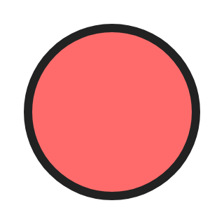
reference
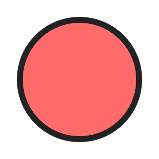
RMSE 1.81
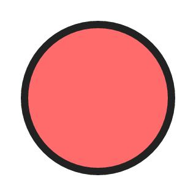
RMSE 1.38

RMSE 1.81
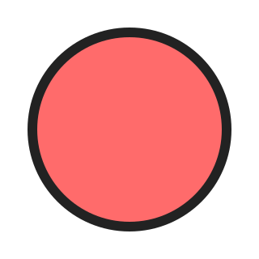
RMSE 1.80
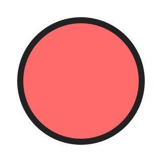
RMSE 1.62
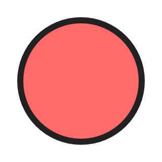
RMSE 2.39
rect (320×320px)
plain shape
reference
RMSE 0.00

RMSE 0.00

RMSE 0.00
RMSE 0.00

RMSE 0.00
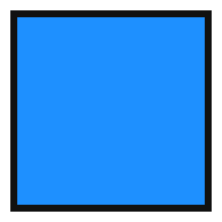
RMSE 1.57
tiger (320×320px)
complex path-heavy vector art
reference

RMSE 5.96
RMSE 5.24
RMSE 5.96
RMSE 5.61
RMSE 5.91
RMSE 11.48
nova-logo (320×161px)
logo, mixed shapes/gradients
reference
RMSE 10.13
RMSE 8.40
RMSE 10.13
RMSE 9.22
RMSE 9.03
RMSE 25.05
clip-mask (320×160px)
clip-path + luminance mask
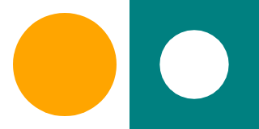
reference
RMSE 4.35
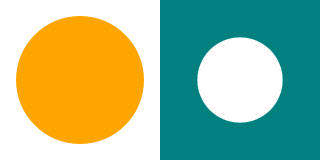
RMSE 6.26

RMSE 4.35
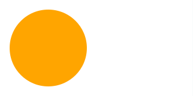
RMSE 97.46
RMSE 4.17
RMSE 118.00
gradient-filter (320×160px)
gradients + SVG filter
reference
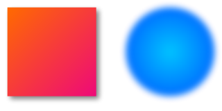
RMSE 8.17
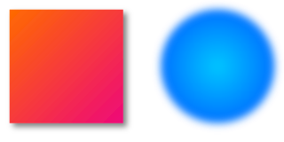
RMSE 13.36
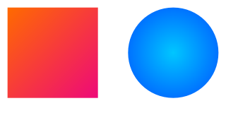
RMSE 42.82
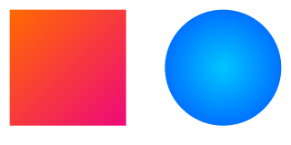
RMSE 42.84
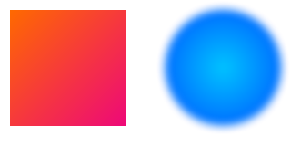
RMSE 15.63
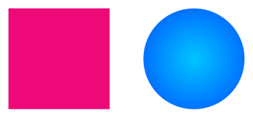
RMSE 49.63
filter-primitives (320×120px)
chained filter primitives (blur/offset/flood/composite)
reference
RMSE 2.41
RMSE 2.07
RMSE 9.07
RMSE 36.92
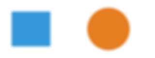
RMSE 38.92
RMSE 17.48
css-use-symbol (320×160px)
CSS transform + <use>/<symbol>
reference
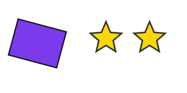
RMSE 1.54
RMSE 26.32
RMSE 26.36
RMSE 26.35
RMSE 26.33
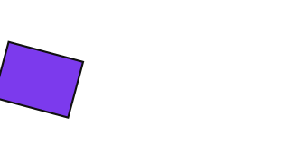
RMSE 69.54
base64-image (320×160px)
embedded raster <image>
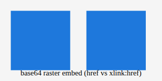
reference
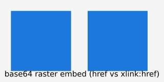
RMSE 24.61
RMSE 18.98
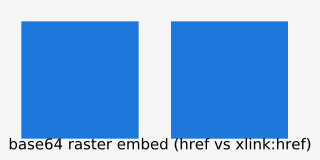
RMSE 24.67
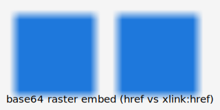
RMSE 28.86
RMSE 93.30

RMSE 93.30
mermaid-flowchart (273×320px)
<foreignObject> text, CSS classDef fills
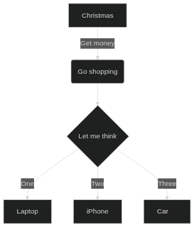
reference
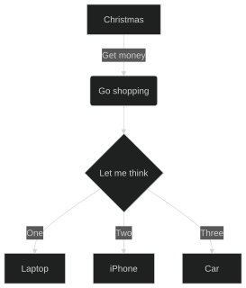
RMSE 11.72
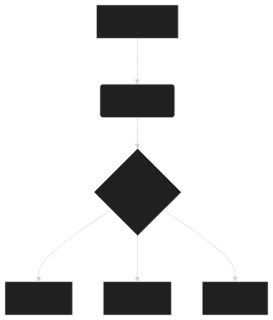
RMSE 23.90
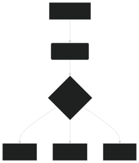
RMSE 25.25
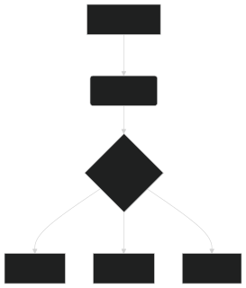
RMSE 25.32
RMSE 39.77
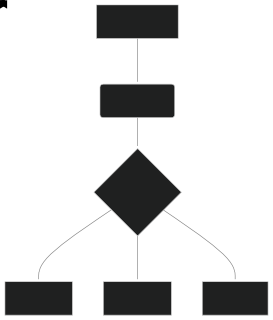
RMSE 31.11
embedded-font (320×80px)
plain <text>, @font-face embedded TTF/OTF
reference
RMSE 37.41

RMSE 39.28
RMSE 44.29
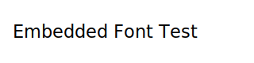
RMSE 45.96
RMSE 39.28

RMSE 39.28
embedded-font-distinctive (320×112px)
embedded monospace font vs. an unresolvable family, side by side
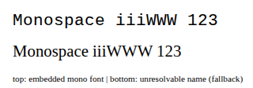
reference
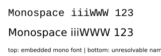
RMSE 55.83
RMSE 48.42
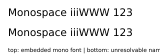
RMSE 58.28
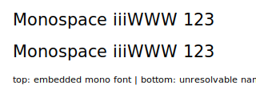
RMSE 58.52

RMSE 48.42

RMSE 48.42
mermaid-01-venn (320×180px)
mermaid venn-beta diagram (mmdc render)
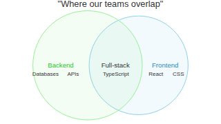
reference
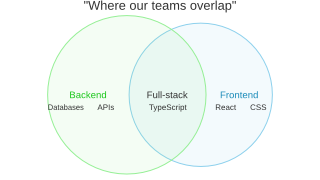
RMSE 6.99
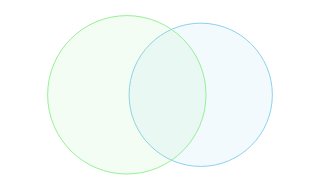
RMSE 16.28
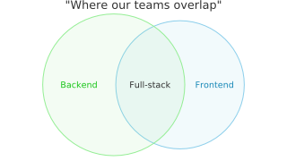
RMSE 198.51
RMSE 198.39
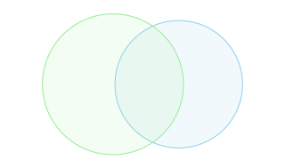
RMSE 198.80
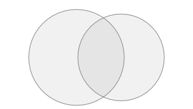
RMSE 207.54
mermaid-02-flowchart (320×129px)
mermaid graph diagram (mmdc render)
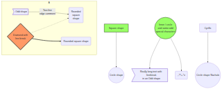
reference
RMSE 4.99
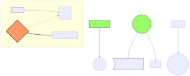
RMSE 8.57
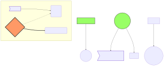
RMSE 201.84
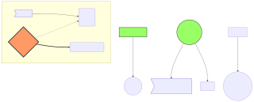
RMSE 202.10
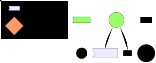
RMSE 231.28
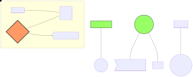
RMSE 198.78
mermaid-03-block (320×154px)
mermaid block diagram (mmdc render)
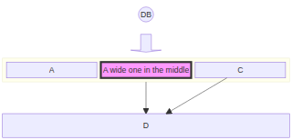
reference
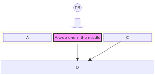
RMSE 3.77
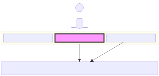
RMSE 8.48
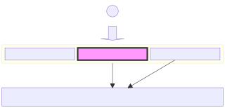
RMSE 203.35
RMSE 203.35
RMSE 235.74
RMSE 201.19
mermaid-04-simple-flowchart (315×320px)
mermaid graph diagram (mmdc render)
reference
RMSE 17.03
RMSE 24.29
RMSE 24.59
RMSE 24.64
RMSE 103.14
RMSE 29.35
mermaid-05-data-flow (320×57px)
mermaid graph diagram (mmdc render)
reference
RMSE 20.95
RMSE 28.19
RMSE 19.02
RMSE 19.42
RMSE 115.38
RMSE 34.38
mermaid-06-simple-sequence (320×181px)
mermaid sequenceDiagram diagram (mmdc render)
reference
RMSE 11.37
RMSE 19.77
RMSE 17.82
RMSE 19.40
RMSE 24.96
RMSE 25.18
mermaid-07-simple-state (254×320px)
mermaid stateDiagram-v2 diagram (mmdc render)
reference
RMSE 23.09
RMSE 54.13
RMSE 54.05
RMSE 54.15
RMSE 69.62
RMSE 55.41
mermaid-08-simple-mindmap (320×245px)
mermaid mindmap diagram (mmdc render)
reference
RMSE 14.06
RMSE 13.36
RMSE 14.68
RMSE 66.61
RMSE 68.43
RMSE 38.29
mermaid-09-complex-sequence (278×320px)
mermaid sequenceDiagram diagram (mmdc render)
reference
RMSE 12.50
RMSE 17.03
RMSE 17.35
RMSE 41.80
RMSE 37.85
RMSE 33.76
mermaid-10-complex-erd (110×320px)
mermaid erDiagram diagram (mmdc render)
reference
RMSE 23.99
RMSE 27.65
RMSE 29.44
RMSE 146.83
RMSE 31.97
RMSE 77.06
mermaid-11-flowchart-multiline-entities (164×320px)
mermaid graph diagram (mmdc render)
reference
RMSE 14.34
RMSE 16.99
RMSE 18.26
RMSE 17.67
RMSE 86.42
RMSE 24.54
mermaid-12-flowchart-subgraphs (320×79px)
mermaid flowchart diagram (mmdc render)
reference
RMSE 16.44
RMSE 16.18
RMSE 44.03
RMSE 11.72
RMSE 149.67
RMSE 34.25
mermaid-13-flowchart-long-label (188×320px)
mermaid graph diagram (mmdc render)
reference
RMSE 32.76
RMSE 30.09
RMSE 25.82
RMSE 25.82
RMSE 163.36
RMSE 34.81
mermaid-14-class-diagram (222×320px)
mermaid classDiagram diagram (mmdc render)
reference
RMSE 29.14
RMSE 28.49
RMSE 29.46
RMSE 29.63
RMSE 30.89
RMSE 34.60
mermaid-15-pie-chart (320×231px)
mermaid pie diagram (mmdc render)
reference
RMSE 3.65
RMSE 11.41
RMSE 10.87
RMSE 50.31
RMSE 29.01
RMSE 28.48
mermaid-16-gantt (320×63px)
mermaid gantt diagram (mmdc render)
reference
RMSE 19.85
RMSE 22.24
RMSE 20.20
RMSE 20.20
RMSE 143.40
RMSE 38.61
mermaid-17-journey (320×157px)
mermaid journey diagram (mmdc render)
reference
RMSE 55.06
RMSE 39.94
RMSE 55.15
RMSE 13.83
RMSE 60.34
RMSE 22.26
mermaid-18-timeline (320×172px)
mermaid timeline diagram (mmdc render)
reference
RMSE 14.25
RMSE 10.59
RMSE 15.10
RMSE 77.11
RMSE 77.58
RMSE 40.81
mermaid-19-sequence-notes-activation (320×227px)
mermaid sequenceDiagram diagram (mmdc render)
reference
RMSE 10.75
RMSE 14.57
RMSE 15.29
RMSE 16.91
RMSE 21.89
RMSE 27.01
mermaid-20-state-composite (56×320px)
mermaid stateDiagram-v2 diagram (mmdc render)
reference
RMSE 17.88
RMSE 30.51
RMSE 30.31
RMSE 30.25
RMSE 164.88
RMSE 44.19
mermaid-21-flowchart-shapes-styles (74×320px)
mermaid flowchart diagram (mmdc render)
reference
RMSE 19.80
RMSE 23.54
RMSE 42.16
RMSE 23.74
RMSE 66.63
RMSE 35.80
mermaid-22-gitgraph (320×166px)
mermaid gitGraph diagram (mmdc render)
reference
RMSE 11.62
RMSE 18.15
RMSE 16.51
RMSE 46.90
RMSE 70.72
RMSE 53.80
mermaid-23-quadrant-chart (320×320px)
mermaid quadrantChart diagram (mmdc render)
reference
RMSE 11.10
RMSE 19.78
RMSE 21.32
RMSE 24.45
RMSE 19.80
RMSE 27.93
mermaid-24-xychart (320×229px)
mermaid xychart-beta diagram (mmdc render)
reference
RMSE 8.54
RMSE 15.18
RMSE 13.86
RMSE 12.49
RMSE 15.31
RMSE 15.58
mermaid-25-sankey (320×216px)
mermaid sankey-beta diagram (mmdc render)
reference
RMSE 12.37
RMSE 16.30
RMSE 15.62
RMSE 12.93
RMSE 73.44
RMSE 57.63
mermaid-26-block (320×276px)
mermaid block-beta diagram (mmdc render)
reference
RMSE 21.34
RMSE 18.26
RMSE 19.76
RMSE 19.76
RMSE 161.15
RMSE 31.50
mermaid-27-c4-context (176×320px)
mermaid C4Context diagram (mmdc render)
reference
RMSE 13.20
RMSE 21.15
RMSE 13.25
RMSE 13.43
RMSE 13.48
RMSE 18.10
mermaid-28-requirement (215×320px)
mermaid requirementDiagram diagram (mmdc render)
reference
RMSE 24.92
RMSE 33.38
RMSE 34.99
RMSE 34.46
RMSE 35.91
RMSE 37.47
mermaid-29-kanban (320×81px)
mermaid kanban diagram (mmdc render)
reference
RMSE 29.34
RMSE 24.67
RMSE 28.69
RMSE 77.71
RMSE 151.54
RMSE 44.39
mermaid-30-architecture (309×320px)
mermaid architecture-beta diagram (mmdc render)
reference
RMSE 16.31
RMSE 8.60
RMSE 17.57
RMSE 22.85
RMSE 106.80
RMSE 69.34
mermaid-31-packet (320×132px)
mermaid packet-beta diagram (mmdc render)
reference
RMSE 5.35
RMSE 12.94
RMSE 7.69
RMSE 7.26
RMSE 155.08
RMSE 38.15
mermaid-32-radar (320×320px)
mermaid radar-beta diagram (mmdc render)
reference
RMSE 7.41
RMSE 7.41
RMSE 8.06
RMSE 114.97
RMSE 142.58
RMSE 39.40
mermaid-33-treemap (320×119px)
mermaid treemap-beta diagram (mmdc render)
reference
RMSE 7.21
RMSE 16.29
RMSE 29.10
RMSE 159.09
RMSE 16.70
RMSE 145.85
mermaid-34-venn (320×180px)
mermaid venn-beta diagram (mmdc render)
reference
RMSE 11.15
RMSE 15.62
RMSE 17.41
RMSE 19.94
RMSE 17.41
RMSE 22.14
mermaid-35-ishikawa (277×320px)
mermaid ishikawa-beta diagram (mmdc render)
reference
RMSE 9.95
RMSE 18.38
RMSE 18.08
RMSE 21.54
RMSE 48.69
RMSE 20.82
mermaid-36-wardley (320×233px)
mermaid wardley-beta diagram (mmdc render)
reference
RMSE 5.19
RMSE 4.77
RMSE 5.20
RMSE 5.25
RMSE 4.97
RMSE 5.65
mermaid-37-state-fork-choice (145×320px)
mermaid stateDiagram-v2 diagram (mmdc render)
reference
RMSE 13.23
RMSE 17.19
RMSE 18.98
RMSE 19.08
RMSE 129.16
RMSE 23.99
mermaid-38-sequence-control (197×320px)
mermaid sequenceDiagram diagram (mmdc render)
reference
RMSE 17.39
RMSE 20.54
RMSE 17.80
RMSE 37.09
RMSE 35.95
RMSE 73.36
mermaid-39-gantt-advanced (320×93px)
mermaid gantt diagram (mmdc render)
reference
RMSE 21.93
RMSE 27.09
RMSE 21.33
RMSE 20.95
RMSE 162.56
RMSE 43.48
mermaid-40-erd-relations (320×245px)
mermaid erDiagram diagram (mmdc render)
reference
RMSE 13.27
RMSE 18.22
RMSE 18.95
RMSE 90.43
RMSE 42.56
RMSE 48.35
mermaid-41-class-advanced (320×118px)
mermaid classDiagram diagram (mmdc render)
reference
RMSE 28.22
RMSE 29.19
RMSE 35.81
RMSE 31.17
RMSE 32.09
RMSE 36.25
mermaid-42-mindmap-shapes (320×214px)
mermaid mindmap diagram (mmdc render)
reference
RMSE 16.44
RMSE 18.66
RMSE 16.71
RMSE 84.69
RMSE 85.65
RMSE 47.61
mermaid-43-timeline-sections (320×131px)
mermaid timeline diagram (mmdc render)
reference
RMSE 18.13
RMSE 12.97
RMSE 18.54
RMSE 90.62
RMSE 91.29
RMSE 47.61
mermaid-44-pie-basic (320×252px)
mermaid pie diagram (mmdc render)
reference
RMSE 5.47
RMSE 11.75
RMSE 11.37
RMSE 37.63
RMSE 31.44
RMSE 20.67
mermaid-45-flowchart-markdown-labels (320×85px)
mermaid flowchart diagram (mmdc render)
reference
RMSE 18.67
RMSE 30.35
RMSE 25.39
RMSE 23.80
RMSE 131.55
RMSE 37.84
mermaid-46-sequence-actors-misc (320×254px)
mermaid sequenceDiagram diagram (mmdc render)
reference
RMSE 7.57
RMSE 8.09
RMSE 9.08
RMSE 12.03
RMSE 47.07
RMSE 48.48
mermaid-47-flowchart-br-bold-label (320×243px)
mermaid flowchart diagram (mmdc render)
reference
RMSE 15.24
RMSE 27.70
RMSE 27.73
RMSE 27.66
RMSE 175.97
RMSE 34.31
mermaid-48-flowchart-bold-italic-runs (320×45px)
mermaid flowchart diagram (mmdc render)
reference
RMSE 16.97
RMSE 23.65
RMSE 23.01
RMSE 21.99
RMSE 152.20
RMSE 37.22